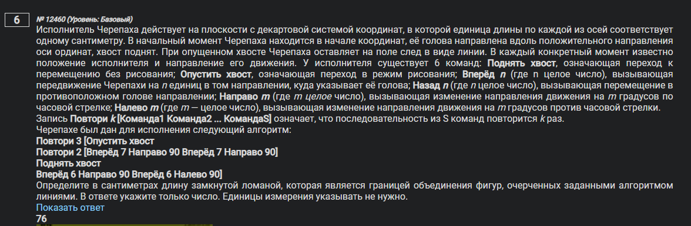
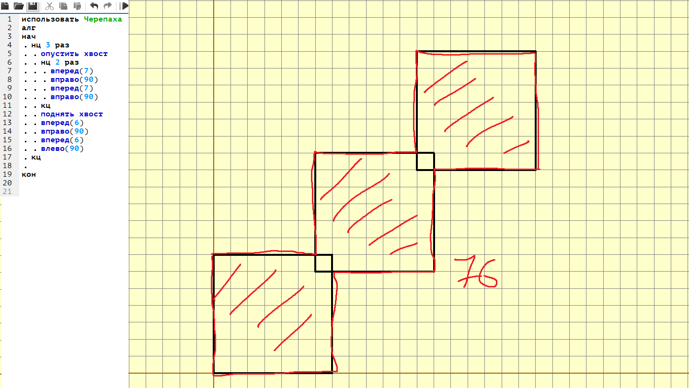
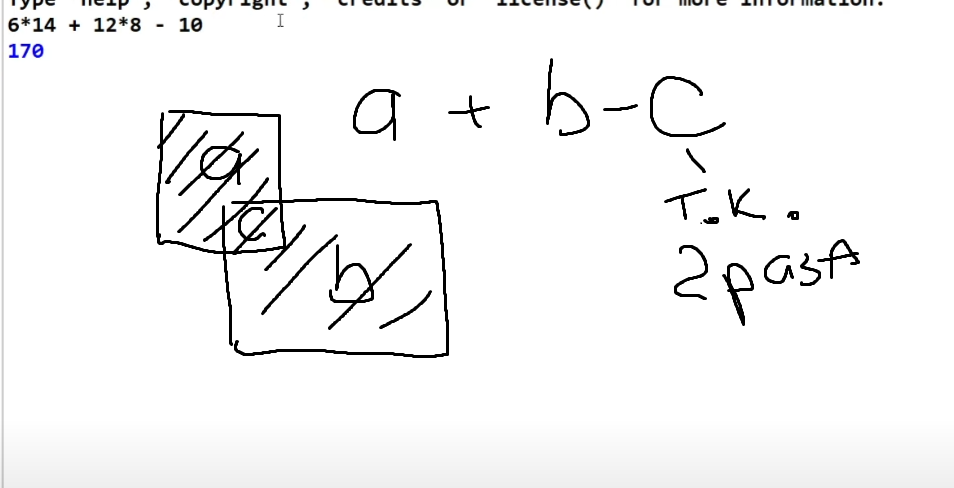
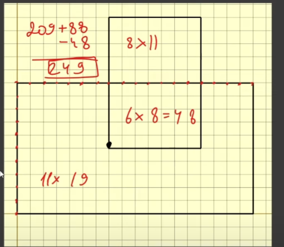

Решение 6 задач Python
12460 Определите в сантиметрах длину замкнутой ломаной, которая является границей объединения фигур, очерченных заданными алгоритмом линиями
 12238 Определите, сколько точек с целочисленными координатами будут находиться внутри объединения фигур
11225 Определите, сколько точек с целочисленными координатами будут находиться внутри области, которая ограничена линией

9737 Определите, сколько точек с целочисленными координатами будут находиться внутри объединения фигур, ограниченных заданными алгоритмом линиями, включая точки на линиях
